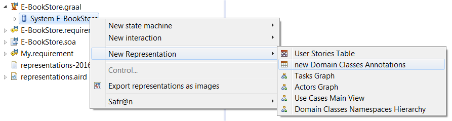
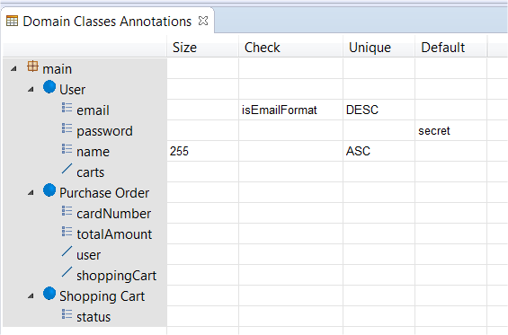

Copyright © 2008, 2026 Obeo - All rights reserved. This program and the accompanying materials are made available under the terms of the Eclipse Public License v2.0
Le point de vue
Graal Methodology (ISD consolidated view) fournit une table permettant de faciliter la saisie d’informations sur le stockage physique des classes participantes Graal.
Les informations sont stockées sous la forme d’annotations.
Pour créer une table
Domain Classes Annotations, activer le point de vue
Graal Methodology (ISD consolidated view) via le menu contextuel
Viewpoints Selection sur le projet ou sur le fichier
.aird.
Une fois le point de vue activé, il est possible de créer une nouvelle table sur un objet Graal de type
System.
À noter qu'à la première activation du point de vue, une table est créée automatiquement pour chaque objet Graal de type
System dans le projet.


Chaque package, classe participante, attribut et référence est affiché dans la colonne de gauche sous une forme arborescente.
La table comporte quatre colonnes : Size, Check, Unique et Default.
ASC indique que l’attribut fait partie d’un index et que les valeurs sont triées en ordre ascendant, la valeur
DESC indique que l’attribut fait partie d’un index et que les valeurs sont triées en ordre descendant.
La modification des valeurs se fait par édition directe des cellules du tableau.